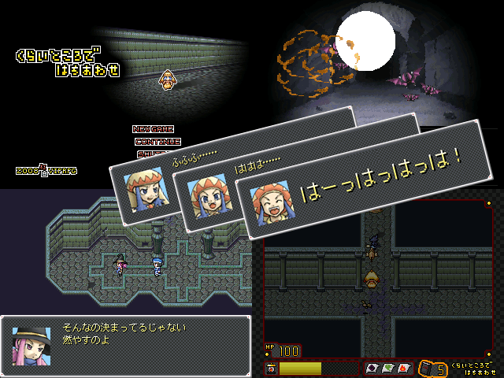

年の瀬のヒマつぶし、大作の合間の息抜き、
炊飯器に入れたご飯が炊けるまでの空いた時間なんかにでも遊んでくれるとうれしいです。
一瞬自作っぽく見えたのは何故？
| No.108 | くらいところではちあわせ |
 | |
| 作者名 | リンサン |
| 作者コメント |
どんどん暗くなるダンジョンを冒険するデフォ戦RPG。 年の瀬のヒマつぶし、大作の合間の息抜き、 炊飯器に入れたご飯が炊けるまでの空いた時間なんかにでも遊んでくれるとうれしいです。 |
| 管理者コメント |
んん！？これは何か良さ気な感じだ！ 一瞬自作っぽく見えたのは何故？ |
| ★削除しました。★ | 2000製---1.5MB |
| 感想掲示板 | |